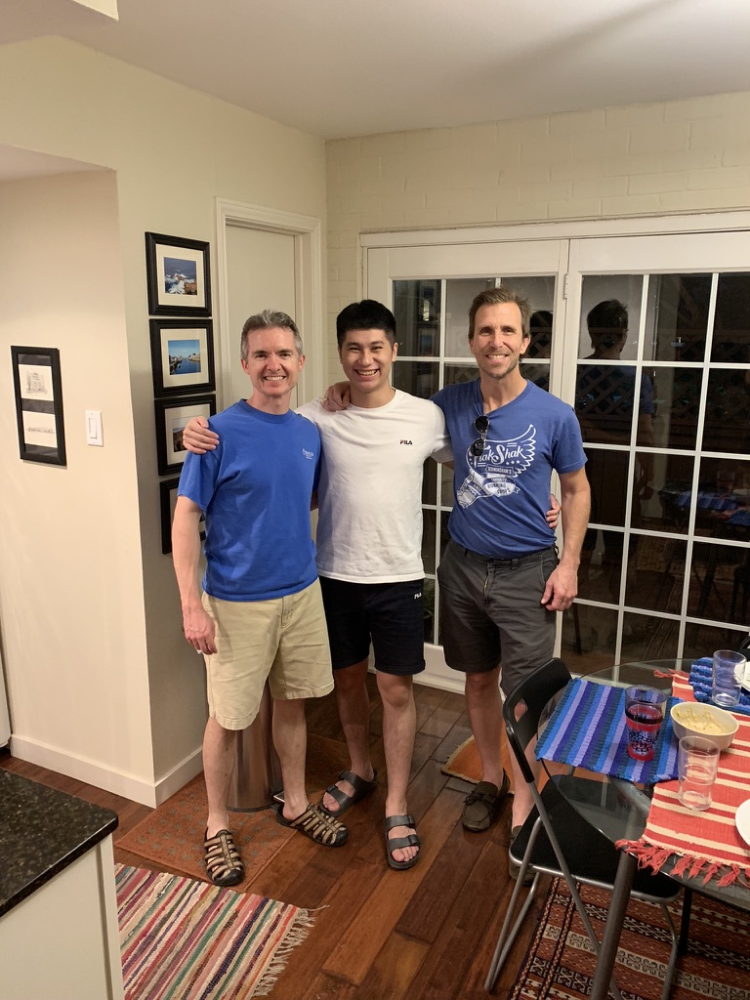
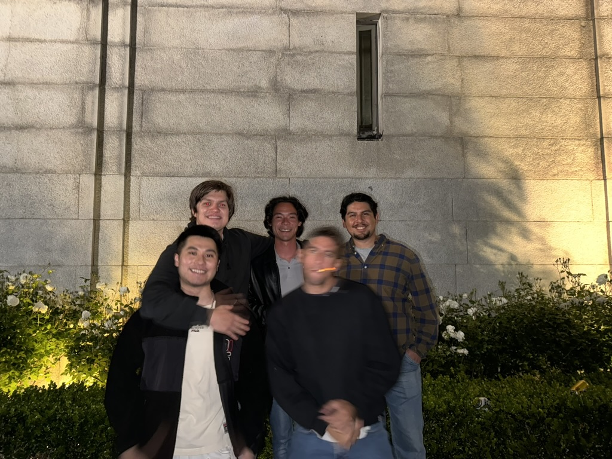

In addition, I am a talkative person and talking too much about quantum mechanics and politics might be my problem, but that doesn't mean I lack a sense of humor.

In 2018, I moved to the U.S. to see if the American Dream was real. After these years, I can say yes, it is! It just hasn’t happened for me yet. I started out in Dallas, Texas since I didn’t speak perfect English at the time, I thought why not throw myself into a place with fewer Chinese speakers?

And then is Berkeley.
I was a transfered student, transitioning from Business Administration to Data Science
and adding a double major in Political Economy during my junior year without any prior coding experience meant
I had to find a way to complete a four-year program in just two. It was indeed a huge challenge for me.
I’m not saying I’m smarter or work harder than anyone else many people do.
But I would say I’m more resilient. I’ve seen people like me drop classes when they feel challenged, stressed, or overwhelmed, but I chose to push through.
"The boat will naturally go straight when it reaches the bridge."